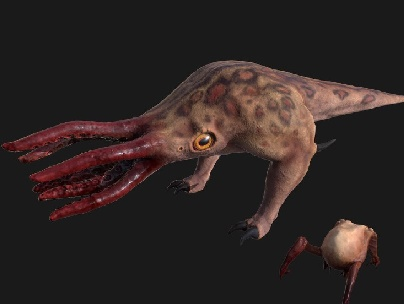

Inb4 “it looks fine, I was born with chronic glaucoma”
Can we just like finally get a visual update on the god damn slave-gear for the Vortigaunts? The gear on them is ancient and then ancient again for crying out loud. It’s not even in the final HL2 for more than a split second because it’s not even up to par with a game from 2004. Moreover, the Combine are the ones big on reproduction control, so just mindlessly bringing over the crotch plate kills any possible logic toward the separate motives of the foes you come up against in both games. It really looks mad ugly which is why none of these things can be forgiven.
I’m also not a fan of the “evolution-based” decision to fuck with the eyes on the bullsquid. The model you had before was fine. An amphibious creature that lives in a dimension where things float the hell around can have any fish-like eye structure it wants. The reasons behind the decisions to give the bullsquid alligator eyes makes me want to punch children. They look like DOOM enemies with their big silly lovecraft faces coming at me, both eyes on me like it’s a face on legs. But I mean… at least that’s not rocking 20 year old textures.
Also fortunate that the workshop has models like this to accustom people like me on that, but I mean, who the hell wants anything but Half Life in their Half Life?!


{kind=link}